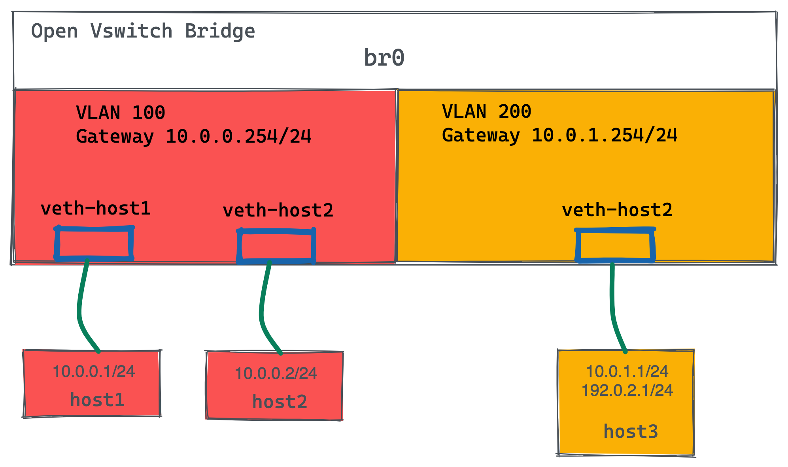
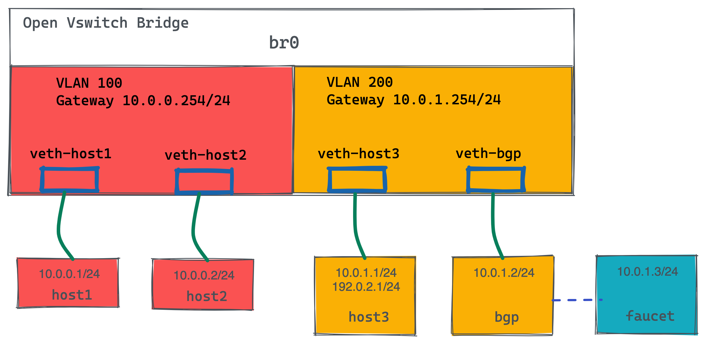

vlans:
hosts:
vid: 100
description: "vlan for clients"
faucet_mac: "00:00:00:00:00:11"
faucet_vips: ["10.0.0.254/24"]
servers:
vid: 200
description: "vlan for servers"
faucet_mac: "00:00:00:00:00:22"
faucet_vips: ["10.0.1.254/24"]
routes:
- route:
ip_dst: "192.0.2.0/24"
ip_gw: '10.0.1.1'
routers:
router-hosts-servers:
vlans: [hosts, servers]
dps:
br0:
dp_id: 0x1
hardware: "Open vSwitch"
interfaces:
1:
name: "host1"
description: "host1 network namespace"
native_vlan: hosts
2:
name: "host2"
description: "host2 network namespace"
native_vlan: hosts
3:
name: "server"
description: "server network namespace"
native_vlan: serversRouter
静态路由

如图所示所示，有一个交换机，2 个VLAN，每个 VLAN 100 中有 2 个Host，VLAN 200 中 1 个 Host，跨VLAN流量通过路由器转发。路由器中配置有一条静态路由，访问 192.0.2.0/24 网络的网关为 10.0.1.1。
控制平面配置
|
Note
|
ip_dst 指定目的地网络为 192.0.2.0/24，ip_gw 为10.0.1.1。 |
数据平面配置
1. Host 配置
create_ns host1 10.0.0.1/24
create_ns host2 10.0.0.2/24
create_ns server 10.0.1.1/24
as_ns host1 ip route add default via 10.0.0.254
as_ns host2 ip route add default via 10.0.0.254
as_ns server ip route add default via 10.0.1.254
as_ns server ip address add 192.0.2.1/24 dev veth02. OVS 配置
sudo ovs-vsctl add-br br0 \
-- set bridge br0 other-config:datapath-id=0000000000000001 \
-- set bridge br0 other-config:disable-in-band=true \
-- set bridge br0 fail_mode=secure \
-- add-port br0 veth-host1 -- set interface veth-host1 ofport_request=1 \
-- add-port br0 veth-host2 -- set interface veth-host2 ofport_request=2 \
-- add-port br0 veth-server -- set interface veth-server ofport_request=3 \
-- set-controller br0 tcp:127.0.0.1:6653 tcp:127.0.0.1:66543. 查看 server 地址信息
$ as_ns server ip addr
1: lo: <LOOPBACK,UP,LOWER_UP> mtu 65536 qdisc noqueue state UNKNOWN group default qlen 1000
link/loopback 00:00:00:00:00:00 brd 00:00:00:00:00:00
inet 127.0.0.1/8 scope host lo
valid_lft forever preferred_lft forever
inet6 ::1/128 scope host
valid_lft forever preferred_lft forever
2: veth0@if12: <BROADCAST,MULTICAST,UP,LOWER_UP> mtu 1500 qdisc noqueue state UP group default qlen 1000
link/ether 8a:11:56:ed:90:1a brd ff:ff:ff:ff:ff:ff link-netnsid 0
inet 10.0.1.1/24 scope global veth0
valid_lft forever preferred_lft forever
inet 192.0.2.1/24 scope global veth0
valid_lft forever preferred_lft forever
inet6 fe80::8811:56ff:feed:901a/64 scope link
valid_lft forever preferred_lft forever访问测试
1. host1 ping server
$ as_ns host1 ping 10.0.1.1 -c2
PING 10.0.1.1 (10.0.1.1) 56(84) bytes of data.
64 bytes from 10.0.1.1: icmp_seq=1 ttl=63 time=0.367 ms
64 bytes from 10.0.1.1: icmp_seq=2 ttl=63 time=0.103 ms
$ as_ns host1 ping 192.0.2.1 -c2
PING 192.0.2.1 (192.0.2.1) 56(84) bytes of data.
64 bytes from 192.0.2.1: icmp_seq=1 ttl=63 time=0.308 ms
64 bytes from 192.0.2.1: icmp_seq=2 ttl=63 time=0.131 ms2. 在 server 上抓包
$ as_ns server tcpdump -l -e -n -i veth0
10:52:16.957652 00:00:00:00:00:22 > 8a:11:56:ed:90:1a, ethertype ARP (0x0806), length 60: Request who-has 10.0.1.1 tell 10.0.1.254, length 46
10:52:16.957665 8a:11:56:ed:90:1a > 00:00:00:00:00:22, ethertype ARP (0x0806), length 42: Reply 10.0.1.1 is-at 8a:11:56:ed:90:1a, length 28
10:52:42.127538 00:00:00:00:00:22 > 8a:11:56:ed:90:1a, ethertype IPv4 (0x0800), length 98: 10.0.0.1 > 10.0.1.1: ICMP echo request, id 4105, seq 1, length 64
10:52:42.127559 8a:11:56:ed:90:1a > 00:00:00:00:00:22, ethertype IPv4 (0x0800), length 98: 10.0.1.1 > 10.0.0.1: ICMP echo reply, id 4105, seq 1, length 64
10:52:43.159842 00:00:00:00:00:22 > 8a:11:56:ed:90:1a, ethertype IPv4 (0x0800), length 98: 10.0.0.1 > 10.0.1.1: ICMP echo request, id 4105, seq 2, length 64
10:52:43.159878 8a:11:56:ed:90:1a > 00:00:00:00:00:22, ethertype IPv4 (0x0800), length 98: 10.0.1.1 > 10.0.0.1: ICMP echo reply, id 4105, seq 2, length 64
10:52:47.383850 8a:11:56:ed:90:1a > 00:00:00:00:00:22, ethertype ARP (0x0806), length 42: Request who-has 10.0.1.254 tell 10.0.1.1, length 28
10:52:47.386082 00:00:00:00:00:22 > 8a:11:56:ed:90:1a, ethertype ARP (0x0806), length 60: Reply 10.0.1.254 is-at 00:00:00:00:00:22, length 46
10:52:58.085359 00:00:00:00:00:22 > 8a:11:56:ed:90:1a, ethertype IPv4 (0x0800), length 98: 10.0.0.1 > 192.0.2.1: ICMP echo request, id 4108, seq 1, length 64
10:52:58.085380 8a:11:56:ed:90:1a > 00:00:00:00:00:22, ethertype IPv4 (0x0800), length 98: 192.0.2.1 > 10.0.0.1: ICMP echo reply, id 4108, seq 1, length 64
10:52:59.095718 00:00:00:00:00:22 > 8a:11:56:ed:90:1a, ethertype IPv4 (0x0800), length 98: 10.0.0.1 > 192.0.2.1: ICMP echo request, id 4108, seq 2, length 64
10:52:59.095782 8a:11:56:ed:90:1a > 00:00:00:00:00:22, ethertype IPv4 (0x0800), length 98: 192.0.2.1 > 10.0.0.1: ICMP echo reply, id 4108, seq 2, length 64BIG 路由
本部分在上面静态路由的基础上调整静态路由到 BG P路由，数据平面示意如下图：

控制平面配置
1. 删除静态路由
routes:
- route:
ip_dst: "192.0.2.0/24"
ip_gw: '10.0.1.1'2. 增加 BGP 配置
bird:
bgp:
vlan: servers # The VLAN faucet use for BGP
as: 65000 # Faucet's AS number
port: 9179 # BGP port for Faucet to listen on.
routerid: '10.0.1.3' # Faucet's Unique ID.
server_addresses: ['10.0.1.3'] # Faucet's listen IP for BGP
neighbor_addresses: ['10.0.1.2'] # Neighbouring IP addresses (IPv4/IPv6)
neighbor_as: 65001 # Neighbour's AS number3. 增加接口配置
4:
name: "bgp"
description: "BIRD BGP router"
native_vlan: servers
5:
name: "faucet"
description: "faucet dataplane connection"
native_vlan: servers4. 完整配置
vlans:
hosts:
vid: 100
description: "vlan for clients"
faucet_mac: "00:00:00:00:00:11"
faucet_vips: ["10.0.0.254/24"]
servers:
vid: 200
description: "vlan for servers"
faucet_mac: "00:00:00:00:00:22"
faucet_vips: ["10.0.1.254/24"]
routers:
router-hosts-servers:
vlans: [hosts, servers]
bird:
bgp:
vlan: servers # The VLAN faucet use for BGP
as: 65000 # Faucet's AS number
port: 9179 # BGP port for Faucet to listen on.
routerid: '10.0.1.3' # Faucet's Unique ID.
server_addresses: ['10.0.1.3'] # Faucet's listen IP for BGP
neighbor_addresses: ['10.0.1.2'] # Neighbouring IP addresses (IPv4/IPv6)
neighbor_as: 65001 # Neighbour's AS number
dps:
br0:
dp_id: 0x1
hardware: "Open vSwitch"
interfaces:
1:
name: "host1"
description: "host1 network namespace"
native_vlan: hosts
2:
name: "host2"
description: "host2 network namespace"
native_vlan: hosts
3:
name: "server"
description: "server network namespace"
native_vlan: servers
4:
name: "bgp"
description: "BIRD BGP router"
native_vlan: servers
5:
name: "faucet"
description: "faucet dataplane connection"
native_vlan: servers数据平面配置
1. 添加 bgp host 运行 bird
create_ns bgp 10.0.1.2/24
sudo ovs-vsctl add-port br0 veth-bgp -- set interface veth-bgp ofport_request=42. 条件 Faucet host，可以和 bgp host 通信
sudo ip link add veth-faucet type veth peer name veth-faucet-ovs
sudo ovs-vsctl add-port br0 veth-faucet-ovs -- set interface veth-faucet-ovs ofport_request=5
sudo ip addr add 10.0.1.3/24 dev veth-faucet
sudo ip link set veth-faucet up
sudo ip link set veth-faucet-ovs up3. 安装 BIRD
sudo apt-get install bird
sudo systemctl stop bird
sudo systemctl stop bird64. BIRD 配置 /etc/bird/bird.conf
protocol kernel {
scan time 60;
import none;
}
protocol device {
scan time 60;
}
# Generate static route inside bird
protocol static {
route 192.0.2.0/24 via 10.0.1.1;
}
# BGP peer with faucet
# Import all routes and export our static route
protocol bgp faucet {
local as 65001;
neighbor 10.0.1.3 port 9179 as 65000;
export all;
import all;
}5. 启动并查看 BIRD 运行
$ as_ns bgp bird -P /run/bird-bgp.pid
$ as_ns bgp ps -ef | grep bird
$ as_ns bgp netstat -antulop | grep 5861
tcp 0 0 0.0.0.0:179 0.0.0.0:* LISTEN 5861/bird off (0.00/0/0)
tcp 0 1 10.0.1.2:60903 10.0.1.3:9179 SYN_SENT 5861/bird on (1.72/1/0)访问测试
1. 查看 bird 状态
2. T
3. T